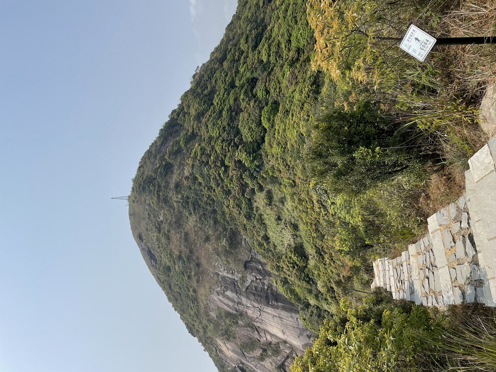
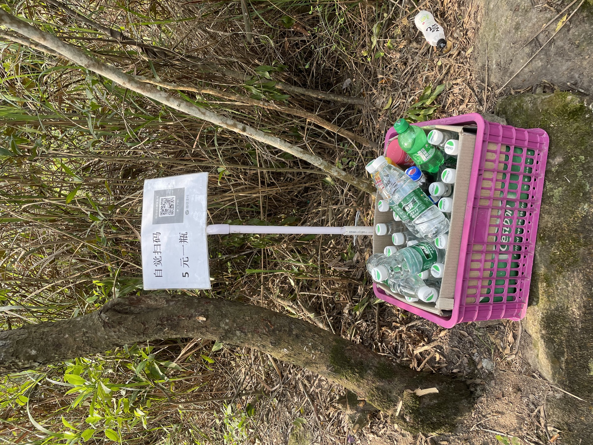

梅沙尖
2021年3月28日，深圳读书的儿子告诉我们一个人去了梅沙尖爬山。起初并不在意，想来就是一个小山丘吧，看到他在朋友圈发的略显冷清照片，更加印证了自己的想法。晚上视频时看着他略显疲倦的神色，告诉我们爬了3个多小时的山，才提起了我的兴趣。于是百度加大众点评，才知道，“梅沙尖海拔753米，是深圳的第三高峰，远望如巨大的尖锥从群山中拔起，登山顶瞭望，山水相间，大小梅沙美景、三洲田风景区一览无余”。
儿子发的照片中有一张是仰拍梅沙尖顶的、一张应该是在梅沙尖顶瞭望风景的、还有一张是在山路上的“自助售水点“的，都看不见人影，至于风景，在电脑手机上看照片中似乎也很难体会到心旷神怡的感觉，只是觉得“自助售水点“还真是有点“高级”的。

好吧，
– 这就是一座少有人去领略风景的小山丘1。
2021年3月28日，我在上海的家里完成了中期电力负荷预测的理论计算工作，想来以后可以用这一套理论和程序快速进行中期负荷预测了，喝了杯自己手冲的咖啡，晚上又喝了一杯瀚克硕的黑啤酒，也算是庆祝了一下。回想这几年，我一直致力于如何提升中长期预测准确率的工作。自2016年1月研究logistic回归方程开始，到2016年11月开始研究季节调整、春节移动假日效应，再从2017年底开始系统研究气象电量响应以来，我的中长期负荷预测研究已经历时5年多了，包括春节、国庆、周末等各种假日，以及去北京、深圳的旅途中。当然，这期间，我也幸运地碰到了“自助售水点“ – R和X-13A-S。
在经历了最初一年多的“无用功”之后，我突然明白了中长期负荷分析和预测的关键所在–气象。2021年再次查阅了Tao Hong、PJM以及NREL的文章。
原来，
– 我登上了一座尚无人去领略风景的“梅沙尖”。
尾注
第一次在blogdown中成功插入图片，参考了Alison Hill的文章↩︎